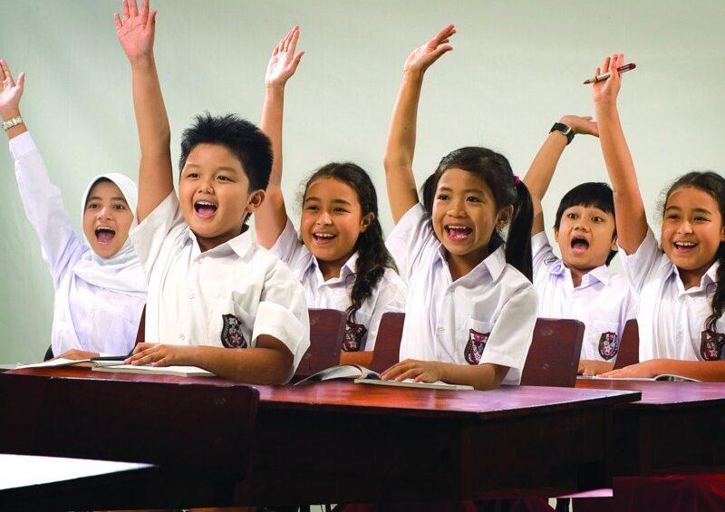

Sampai sekarang, usaha untuk mencapai pembangunan berkelanjutan menjadi salah satu prioritas utama bagi banyak negara, termasuk Indonesia. SDG4 ini menggarisbawahi pentingnya pendidikan dan berperan besar untuk masa depan yang lebih baik. Hal ini menunjukkan kesenjangan pendidikan yang ada di dunia ini. Di Indonesia, kesenjangan pendidikan masih menjadi masalah besar. Pendidikan adalah salah satu aspek utama dalam pembangunan suatu negara dan individu. Memang, banyak anak-anak di kota besar memiliki akses ke sekolah yang berkualitas, namun banyak juga anak-anak di daerah dan desa terpencil yang harus berjuang atau bahkan tidak memiliki akses untuk sekolah. Oleh karena itu, akses pendidikan yang berkualitas dan merata sangatlah penting untuk mewujudkan SDG4 ini. Dengan memberikan peluang pendidikan yang setara ke semua orang di berbagai daerah, potensi tiap-tiap individu dapat diberdayakan dan dikemangkan secara optimal. Sumber daya manusia di Indonesia pun akan semakin meningkat.
Indonesia telah melakukan beberapa upaya untuk mewujudkan SGD4 ini. Salah satunya, adalah memastikan bahwa pendidikan dasar dan menengah gratis untuk semua anak (Target 4.1). Hal ini bertujuan untuk meningkatkan dan memperluas akses pendidikan dan memastikan bahwa semua anak, di daerah manapun, dapat menempuh dan menyelesaikan pendidikan dasar tanpa dikenakan biaya. Pemerintah juga memberikan beasiswa untuk menyelesaikan pendidikan dasar dan menengah bagi siswa dari keluarga kurang mampu, yaitu Program Indonesia Pintar atau PIP. Selain itu, pemerintah juga menjalankan program wajib belajar 12 untuk memastikan bahwa semua anak mendapatkan pendidikan dasar dan menengah secara gratis dan berkualitas di setiap daerah, termasuk daerah pedesaan di Indonesia.
Indonesia juga mengupayakan pendidikan yang inklusif, aman, dan bebas diskriminasi (Target 4.5). Hal ini bertujuan untuk menghilangkan diskriminasi dan memastikan akses pendidikan yang sama dan setara bagi semua orang. Salah satu upaya konkret yang dilakukan pemerintah Indonesia adalah mengembangkan Pusat Konsultasi Pendidikan Inklusif (PKPI) di berbagai daerah untuk memberikan bantuan dan pelatihan bagi para guru dan orang tua untuk mendukung siswa / anak dengan kebutuhan khusus. Dengan ini, para guru yang dilatih dapat menciptakan lingkungan sekolah yang aman, nyaman, dan inklusif. Indonesia juga mengupayakan peningkatan kualitas pengajaran, alias pelatihan dan pengembangan yang profesional untuk guru-guru, sehingga kualitas pendidikan secara keseluruhan meningkat (Target 4C). Indonesia sudah melaksanakan Program Guru Berprestasi dan Tunas Profesional (GBT-TP) yang memberikan pelatihan profesional bagi guru.
Pemerintah terus berusaha dalam meningkatkan akses pendidikan. Salah satunya melalui pembangunan dan renovasi fasilitas sekolah-sekolah negeri (dikelola pemerintah). Selain itu, juga meningkatkan jaringan komunikasi dan internet di daerah-daerah kurang berkembang seperti daerah-daerah pelosok Indonesia. Pemerintah juga mengupayakan pengembangan dalam hal kurikulum. Pemerintah mengembangkan kurikulum menjadi sesuatu yang lebih relevan dengan zaman sekarang, di mana fokus utamanya adalah pekerjaan di masa depan dan perkembangan teknologi (termasuk pendidikan teknis).
Kerjasama internasional dan SDGs tentunya saling berhubungan. Kerjasama internasional memainkan peran yang sangat penting dalam mencapai Tujuan SDGs / Pembangunan Berkelanjutan, karena semuanya berkaitan dengan mengatasi masalah-masalah dan isu-isu global yang saat ini sedang memburuk. Lagi pula, SDGs dibentuk oleh PBB, Perserikatan Bangsa-Bangsa, sebuah organisasi atau forum internasional, yaitu sebuah bentuk kerjasama internasional. Selain itu, tujuan SDGs yang ke-17 juga secara khusus menekankan pentingnya kerjasama global untuk mencapai pembangunan berkelanjutan itu. Setiap negara pasti memiliki kekurangan dan kelebihannya masing-masing. Untuk mencapai tujuan bersama, alias pembangunan berkelanjutan, setiap negara harus bekerjasama, selayaknya sebuah kelompok.
Indonesia pun aktif dalam menginisiasi kerjasama internasional, dengan salah satu tujuannya yaitu mencapai SDGs, salah satunya dalam SDG4, pendidikan berkualitas. Indonesia telah melakukan kerjasama dengan berbagai macam negara untuk mengupayakan pendidikan yang berkualitas di Indonesia dan dunia ini.
Indonesia bekerja sama dengan UNICEF (United Nations Children’s Fund,
Kerjasama Multilateral / Internasional) dalam berbagai program untuk meningkatkan pendidikan
inklusif, terutama anak-anak berkebutuhan khusus. Salah satunya, yaitu program Kemitraan “1 in 11”.
Di program ini, pendidikan yang inklusif diberikan kepada anak-anak berkebutuhan khusus atau anak
penyandang disabilitas melalui olahraga. Program ini merupakan kerja sama antara pemerintah suatu
negara, UNICEF, FC Barcelona Foundation, dan Reach Out to Asia (ROTA). Dengan kekuatan olahraga dan
pendidikan, dapat memastikan bahwa semua anak mendapatkan kesempatan yang sama dan layak.
Indonesia juga melakukan kerjasama dalam bidang pendidikan dengan negara-negara ASEAN (Southeast Asia Nations, Kerjasama Regional). Indonesia memberikan beberapa beasiswa bagi mahasiswa yang terpilih dari negara-negara berkembang di ASEAN untuk datang ke Indonesia. Hal ini bisa mendukung SDG4 karena negara-negara berkembang di ASEAN yang lain bisa saja memiliki pendidikan yang kurang baik. Indonesia memiliki banyak universitas perguruan tinggi yang sangat baik, dan hal ini dapat meningkatkan pendidikan di dunia, meskipun hanya beberapa orang. Selain itu, ada pula program ASEAN Council of Teachers (ACT). ACT adalah suatu konferensi yang dilakukan guru-guru dari negara-negara ASEAN. Para guru diharapkan untuk berdiskusi dan berbagi gagasan/ide untuk mengembangkan kemampuan mendidik dan mengajar di era global.
Selain itu, Indonesia juga melakukan kerjasama internasional dengan negara-negara lain seperti Jepang, negara-negara Eropa, Australia, dll dalam bidang pendidikan melalui beasiswa.
Dengan kerjasama ini, Indonesia dapat berbagi dan memperoleh pengetahuan dalam mencapai SDG4 yaitu pendidikan berkualitas. Kerjasama ini dapat membuat Indonesia memperoleh pengetahuan, pengalaman, dan dukungan teknis maupun finansial. Indonesia secara mandiri dan dengan dukungan negara lain telah sangat mengupayakan pembangunan berkelanjutan di bidang ini dan di bidang lainnya.